Variation

| Previous | Table of Contents | Next |
Having computed the model parameters, the estimated response in the (i, j)th experiment is given by
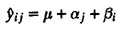
The difference between the estimated response and the measured response yij is attributed to experimental errors. In other words,
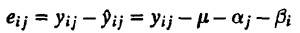
The variance of errors can be estimated from the Sum of Squared Errors (SSE):
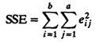
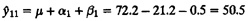
| TABLE 21.3 Error Computation for the Cache Comparison Study | |||
|---|---|---|---|
| Workload | Two Caches | One Cache | No Cache |
| ASM | 3.5 | 3.5 | -7.1 |
| TECO | 0.2 | -0.8 | 0.6 |
| SIEVE | -4.5 | -5.5 | 9.9 |
| DHRYSTONE | -0.5 | 1.5 | -1.1 |
| SORT | 1.2 | 1.2 | -2.4 |
SSE = (3.5)2 + (0.2)2 + ... + (-2.4)2 = 2368.00
As in the case of one-factor designs and in 22r designs, the total variation of y in a two-factor design can be allocated to the two factors and to the experimental errors. To do so, we square both sides of the model equation and add across all observations. The cross-product terms cancel, and we obtain
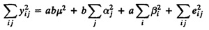
SSY = SS0 + SSA + SSB + SSE
where various sums of squares have been appropriately placed below their corresponding terms. The total variation (SST), as before, is
SST = SSY - SS0 = SSA + SSB + SSE
Thus, the total variation can be divided into parts explained by factors A and B and an unexplained part due to experimental errors. This equation can also be used to compute SSE, since the other sums can be easily computed. The percentage of variation explained by a factor can be used to measure the importance of the factor.
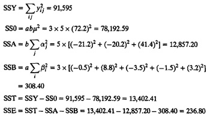
The percentage of variation explained by the caches is
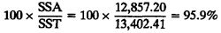
The percentage of variation due to workloads is
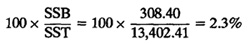
The unexplained variation is
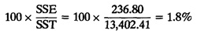
Looking at these percentages, we conclude that the choice of caches is an important parameter in the processor design.
To statistically test the significance of a factor, we divide the sum of squares by their corresponding degrees of freedom to get mean squares. The degrees of freedoms (DF) for various sums are as follows:
SSY = SS0 + SSA + SSB + SSE
ab = 1 + (a - 1) + (b - 1) + (a - 1)(b - 1)
The errors have only (a - 1)(b - 1) degrees of freedom since only (a - 1)(b - 1) of the ab errors can be independently chosen. This is because the errors in each column should add to zero. Similarly, errors in each row should also add to zero. Once the errors in the first a - 1 columns and first b - 1 rows have been chosen, those in the last column and the last row can be computed using the constraints. The degrees of freedom for other sums can be similarly justified.
The mean squares are obtained by dividing the sum of squares by their corresponding degrees of freedom:
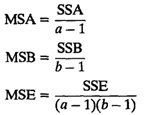
The F-ratio to test the significance of the factor A is
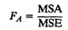
This ratio has an F distribution with a - 1 numerator degrees of freedom and (a - 1)(b - 1) denominator degrees of freedom. Thus, the factor A is considered significant at level α if the computed ratio is more than F[1-α;a-1,(a-1)(b-1)] obtained from the table of quantiles of F-variates (Tables A.6 to A.8 in the Appendix).
| TABLE 21.4 ANOVA Table for Two Factors without Replications | ||||||
|---|---|---|---|---|---|---|
| Component | Sum of Squares | Percentage of Variation | Degrees of Freedom | Mean Square | F-Computed | F-Table |
| y | 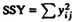 | ab | ||||
| 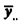 | SSO = ab µ2 | 1 | ||||
| 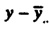 | SST = SSY - SS0 | 100 | ab - 1 | |||
| A | 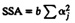 | 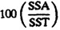 | a - 1 | 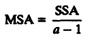 | F[1 - α,a - 1],(a - 1)(b - 1)] | |
| B | 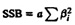 | 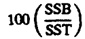 | b - 1 | 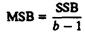 |
| F[1 - α,b - 1,(a - 1)(b - 1)] |
| e | SSE = SST - (SSA + SSB) | 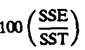 | (a - 1)(b - 1) | 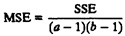 | ||
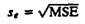
The F-ratio for factor B, similarly, is
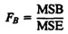
A convenient tabular arrangement to conduct Analysis Of Variance (ANOVA) for a two factor design without replications is shown in Table 21.4.
| Previous | Table of Contents | Next |